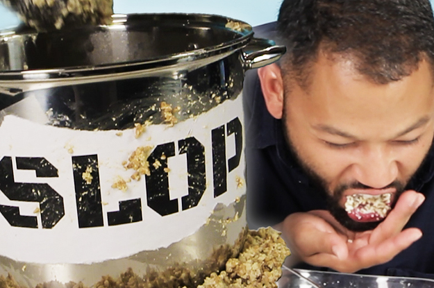

Slop

Description
When I was a young lad, we couldn't afford proper food. Ma n Pa thought our earnings was best spent on things like scratchers and boozohol
That's how we came up with slop. Find some bacon grease in an old jar? Toss it in the community pot. Find some fresh compost? Let that treasure marinate in the family steamer
Ingredients
- 1/2 lb Fresh gunk
- 2 cups Almost expired dairy product
- Scrapped together protein scraps
- 1 TBSP Lovely filth
- Dumpster diving delights
- 1 cup Lightly used bathwater
Steps
- Throw everything in a poorly-washed pot.
- Crank up that heat.
- Let that baby boil.
- Experiment til you don't hate the odor.
- Keep the pot hot for however long you want - this stuff can last you for months.
- Baby, you got a stew going. Enjoy!